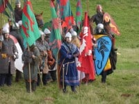
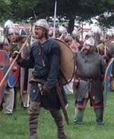
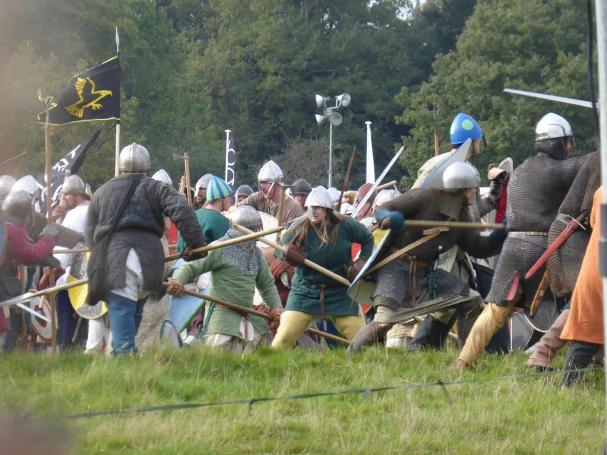

These are from my early days as a writer.
Please now find me on my Anna Stuart Instagram account.
The Battle of Hastings…
The Battle of Hastings


Today – October 14th – is the 949th anniversary of the Battle of Hastings, a momentous turning point in English history, and last week end I had a wonderful two days on the ‘literary stage’ at Battle Abbey. The fabulous re-enactment there takes place every year right on the spot (almost certainly) where the actual battle raged nearly 1000 years ago, only with slightly more beer tents! (See the lovely shield wall pictured, with the ‘bar and refreshments sign behind – bet those Saxons were glad of that!) It was especially exciting for me because last year I was there as a punter, so to be one of the authors on the literary stage was fantastic and I really enjoyed meeting readers and fellow conquest-period enthusiasts.
Our little ‘stage’ was set up in the abbey itself, originally built by William the Conqueror in the years immediately after he took the throne, in penance for all the blood spilt on the battlefield. (visit English Heritage for more information) The buildings have been substantially altered and added to since that period and the first chapel is no longer standing although you can see its partial ruins and foundations marked out on the ground, and a beautiful stone marks the location of the original high altar, apparently built on exactly the spot where King Harold died. Despite all the fascinating suggestions about possible alternative sites for the battle in the last few years – and the ongoing mystery as to why there are no bones from the thousands who died in this terrible slaughter - this remains to me the one overwhelming piece of evidence. A big deal was made out of locating the altar this way and, barely two years after the battle it seems unlikely that they would have got that crucial detail wrong.
No matter – we honoured his memory anyway – and that of William and all their fellows on either side - with our fiction and also enjoyed some lively debate about what might have been – one of the perennial fascinations with 1066:
• What would England have been like if the English had held their shield wall until dark and fought again the next day with reinforcements, almost certainly resulting in a win for Harold? Would he have made it as a king, or would he have been challenged by Edgar Aetheling once he grew to adulthood?
• Or what about if Harald Hardrada had defeated Harold at Stamford Bridge and it had been the Viking Harald who had marched south to face William - might we have ended up with the King of Norway as our ruler, as King Cnut had been just 30 years before? If we had, we would have had a Rus Princess as our Queen and as her many brothers sisters were ruling in several of the major courts of Europe we might have been a very ‘connected’ nation from early on.
• Or what if, as one member of the audience intriguingly suggested, Malcolm of Scotland had decided to invade, either in support of Edgar who fled there after the surrender to William and whose sister, Margaret, he married, or in his own right? We could have been a ‘united Britain’ from the 11th century instead of waiting for King James in the 17th!
It was a fascinating discussion and we agreed that it would be great fun to issue some ‘alternative endings’ stories in 2016 to celebrate the 950th anniversary – so watch this space…
The only thing I found tricky was the more informal ‘meet the author’ sessions where it was my job to hover near my display of books and sign copies for those who wishes. Sound easy? It is, but we’re all so very British that it’s also rather awkward. I don’t want to hassle people with a ‘hard sell’ and they don’t want to bother me, so we dodge around for a bit and finally get talking and then it’s great.
I suspect the Americans are much better at this sort of things – much happier just to chat to you, take a look at your book, and then either buy or walk away as they choose. In Britain we fear putting ourselves under an obligation so readers shy away and authors hesitate to ‘impose’ – silly really! So I guess my message to readers at these sorts of events would be – do, please, come up and chat. I won’t be in any way offended if you don’t fancy buying my book, I’m just happy to talk to you about my queens or the period generally or the joys and pains of being a writer.
Next year is the 950th anniversary of the Battle- a big landmark and it promises to be a fantastic occasion. So if you didn’t get down this year, or have never been, book your guest house on England’s lovely southern coast for the 15th/16th of October 2016 and be there to join in the celebrations/commiserations for an event that changed English history forever. See you there…
